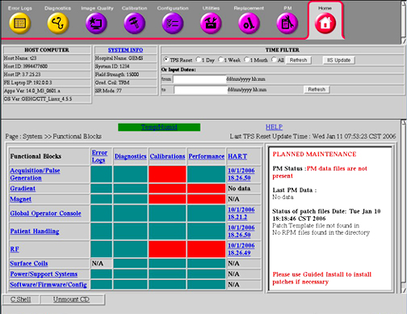
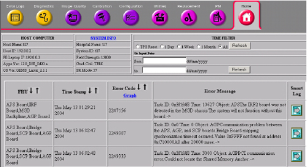
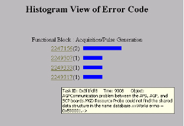
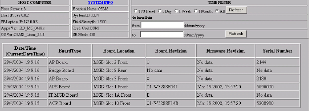

Proprietary to General Electric Company
Direction 5440000, Rev# 5
Signa HDxt Service Methods
Module Version 2.0, Version Date 6/18/09
Proprietary to General Electric Company |
| Required Persons | Preliminary Reqs | Procedure | Finalization |
|---|---|---|---|
| 1 | Not Applicable | Not Applicable | Not Applicable |
| Last Update | 01/24/2006 |
FE Cockpit is a software feature designed to provide the GE Field Engineer with an easier and more efficient way to: .
Remotely or locally navigate through service data on an MR system.
Understand the operational status of an MR system.
Pinpoint the root cause(s) of MR system failures when necessary.
Choose the correct FRU(s) when necessary.
View Temperature and Humidity data from system components.
The FE Cockpit will be accessed locally from the Service Browser tool. The Service Key must be installed to invoke FE Cockpit.
Start this tool by clicking the [Service Desktop] icon and selecting [Service Browser]on the Service Desktop Manager window at the left side of the screen. Once the Service Browser tool is started, the Home Page will appear on the screen. This Home Page (refer to Illustration 1) is the FE Cockpit top-level page.
Illustration 1: Service Browser And FE Cockpit Home Page (Example)

A new feature for HDx release is the ability to view the system Temperature and Humidity data from the system sensors on the GOC and SC cabinet. To view data select the Temp/Humid option in the center of the FE Cockpit home page. You then have the option to view Temperature or Humidity for the 2 different sensors in either graph or data format. See Illustration 2. Select either the Graph or the Table button to view data.
Illustration 2: Plot of GOC Temperature

The FE Cockpit top-level page is broken in to three main sections: the Header, Functional Grid, and Planned Maintenance.
Header
The header contains all the general system information; much of which was on the original Service Browser Home Page. The Host Computer and System Info boxes contain information specific to the scanner.
The Time Filter area allows you to filter the displayed information based on a desired time criteria. Directly below the Header is a [HELP] link, which takes the user to a short help summary page.
Host Computer and System Info
The Host computer section of the Header contains general system information such as the Host name, Host ID (used for eLicense), IP address, and Software and OS versions. The System Info section gives details of the Hospital, System ID, and type of system.
Illustration 3: SYSTEM INFO POPUP WINDOW

The [System Info] title is a link, which when selected, brings up a new window (refer toIllustration 3) with additional information pulled from the system’s INFO log.
Time Filter
Upon initial startup of FE Cockpit, the data shown in the Functional Grid is anything that occurred since the Last TPS reset. [TPS reset] is the default selection for the time filter. When interested in different data, the selections of 1 Day, 1 Week, 1 Month, and All can also be made. To change the time filter, select the radial button to the left of the desired selection, and then hit the [Refresh] button.
If any of the Install in Spec results has changed since the FE cockpit was opened, the [IIS Update] button must be selected to update this data in the FE cockpit. This button will run the IIS script, and then update the cockpit with all new information. The [Refresh] button will only update data from the error and HART log files.
A date range can also be entered to filter data. Enter the starting date in the DD/MM/YYYY H:M format. Enter the ending date, using the same format, and select the corresponding [Refresh ]button.
Planned Maintenance
On the lower right hand side of the FE cockpit top-level page, is the Planned Maintenance status box.
The following color-coated texts are status indicators that may be shown:
Green: PM is due in > than 14 days
Black: PM is due in < than 14 days
Red: PM is overdue (past due date ); OR PM Data Files are not present.
The last PM data available on the system is pulled and posted in this status box. Each test is listed, followed by the Pass, Marginal, or Fail status.
Patch status is also listed in this Planned Maintenance window. If the patch configuration file has been loaded on the scanner, any patches required will be listed.
Functional Grid
The functional grid is where most of the system data is located. This area has been broken down into nine main functional areas. Any log data that can be traced to a specific functional area will be listed in the various columns to the right of the functional areas.
Illustration 4: MID-LEVEL PAGE (EXAMPLE)

Current functional areas are: Acquisition/Pulse Generation, Gradient, Magnet, Global Operator Console, Patient Handling, RF, Surface Coils, Power/Support Systems, and Software / Firmware /Config.
Each of the main functional areas can be broken down further into mid-level and/or FRU-level pages (refer to Illustration 4). These lower level pages break the log information down into more specific categories or to specific FRUs. In addition, if Calibration or Performance Data is available for that functional area, the details will be listed on the lower level page.
Several types of data can be seen in the functional grid and the lower level FRU pages. Current data is grouped into the following areas:
Error Logs
From the functional grid, if one or more errors have been logged for a particular functional area, the corresponding error field will contain text listing the number of errors. This text is clickable, and links directly to the error log details page for only these specific errors (refer to Illustration 5). If there are no error messages tied to a specific functional area, the field in the Error log column will be green.
Illustration 5: ERROR LOGS DETAIL PAGE

The Error Log column title is a link that will also take the user directly to an error logs detail page, which contains all listed errors.
Illustration 6: ERROR CODE HISTOGRAM

From the Error logs Detail page, a [Graph] link is available in the Error Code column, which links to a histogram of the frequency of error occurrence (refer toIllustration 6).
The far right column of the error log details contains a link that will take the user to the “Smart Log” (refer to Illustration 7) . The Smart Log is another way to look at the error, but additional information can be gathered such as Protocol and Coil in use when the error occurred.
Illustration 7: SMART LOG

Smart Log
The Smart Error Log is a new way of looking at all the errors in the error log. The log has a color-coded background, to separate common errors and messages that are most likely not the problem, from the other errors. Errors with a gray background will often be less critical than the errors with the yellow background.
In addition, the Smart Log will try to determine which errors occurred during a service situation. This is determined by looking at the “Patient ID” entry, and comparing it to a list of “service” names. Examples are service, DQA, test, and those entries with no digits. When the errors happened during a service situation, a dark yellow “Service” box is placed around them.
Another key feature of the Smart Log is that it correlates the error to the most recent coil and protocol used. If the protocol entry is too old that it cannot be trusted, the coil, psd, and protocol names will not be listed at all. If there is an active protocol at the time of the error, the “protocol” name will become a link, which can be selected for more specific protocol information (refer to Illustration 8).
Illustration 8: SMART LOG: PROTOCOL DETAIL

Diagnostics
The Diagnostics column is set up just like the errors column. By selecting the column title, the user will be sent to the details page for the all the diagnostic errors. If a field in the diagnostic column has errors, the number of errors will be listed, as well as a link, which again takes the user to the diagnostic error log details page.
Calibrations
From the top-level page in FE cockpit, the Calibrations column only shows a pass/fail status. If all calibrations being traced within a functional block have been run, the corresponding grid box will be green. It will also be green if there are no applicable calibrations. If a calibration has not been completed, the functional area’s related field will be red.
The title of the Calibration column is a link, which will pull up a new window with all the calibrations listed (refer toIllustration 9). The specific calibrations that have not been run will be listed in red.
The calibration results can also be viewed from the mid-level FRU pages. The block on the mid-level page will list all the pertinent calibrations, the cal file being searched for, and whether or not this file was found (refer to Illustration 10). If the file is available, then the time stamp of the file is listed in the right hand column of the block.
Illustration 9: CALIBRATION WINDOW (EXAMPLE)

Illustration 10: MID-LEVEL CALIBRATION BLOCK (EXAMPLE)

Performance
The Performance column is laid out in a similar fashion as the Calibration column. If a performance test, such as SPT, has failing results, the field corresponding to the affected functional area(s) will be red. If all data passes, the field will be green.
The title of the Performance column is a link, which will pull up a new window with all the performance tests listed (refer to Illustration 11). Each of the performance test results can be viewed by clicking on the appropriate test’s “results” link (refer to Illustration 12).
The performance test results can also be viewed from the mid-level FRU pages. The status block on each mid-level FRU page lists all the applicable performance tests for the functional area in question, as seen in Illustration 10. The title of the test can be selected, and any results available will be shown (refer toIllustration 12).
Illustration 11: SYSTEM PERFORMANCE DATA SCREEN

Illustration 12: PERFORMANCE TEST DETAILS (EPI EXAMPLE)

HART
The last column of the Functional grid is the location where HART information is displayed. If the functional area does not have any FRU’s traced to HART logs, the field will list N/A. Otherwise, the field will show whether there is data in the HART log, and if so, the most recent date the data changed.
If the title of the HART column, or any of the data field links is selected, the user will be taken to the HART log details page (refer toIllustration 13).
Illustration 13: HART MESSAGE DETAILS (EXAMPLE)

No finalization steps.